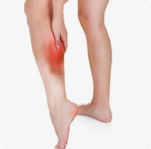
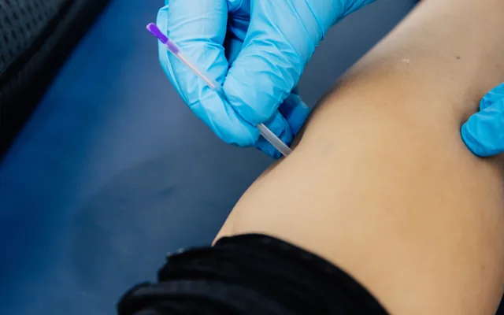
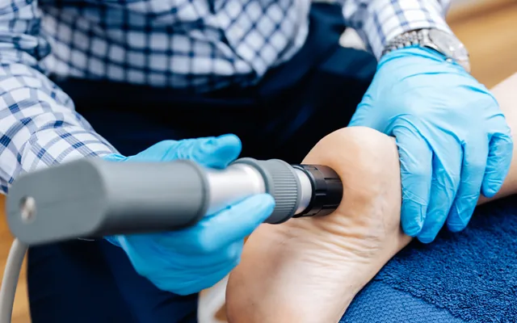
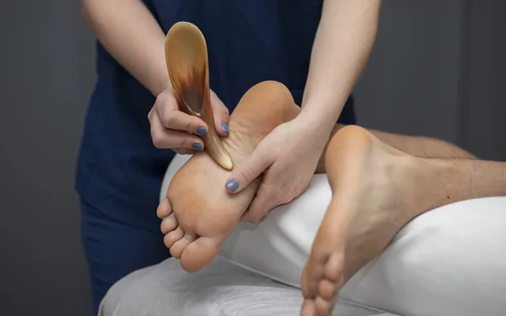
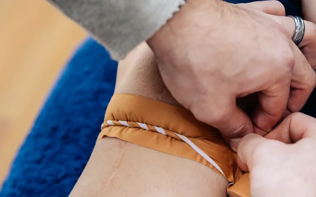
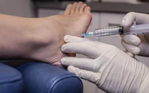

One pair may not be enough
A running orthotic needs different materials and angles from an everyday one, because the forces are so much higher. Many runners wear the same pair for everything.
Overuse injuries from running, and getting back to it afterwards without the same thing happening again.
Trusted by patients from Sydney to Narrabri


If this sounds like your pain, there is a structural reason for it. The assessment is what finds it.
Running injuries are almost always a mismatch between load and capacity. Either the training went up faster than the tissue adapted, or the mechanics mean one structure is doing more work than it should on every stride.
Running multiplies every small misalignment. This is why a foot that copes with walking can break down with mileage.

What changes when you run
The force through the feet when running on hard ground is four to five times your body weight.
Hard, flat ground returns more force to the body than natural terrain, and footwear has not changed to match.
A twisted shin the hips have been compensating for can show up as ankle and knee pain, often worse running downhill.
A running orthotic needs different materials and angles from an everyday one, because the forces are so much higher. Many runners wear the same pair for everything.
A plan can include strengthening the inner quadriceps (VMO), stretching the glutes and ITB, foot mobilisation and dry needling of the muscles that have been compensating.
Running Injuries is diagnosed with the Najjarine Biomechanical Assessment, so treatment is prescribed against a finding rather than a symptom.

We assess your gait under load rather than standing still, because that is where a running injury actually happens.
We identify what is failing and why — mechanics, training load, footwear, or a combination.
Treatment is paired with a return-to-running plan so load is rebuilt rather than resumed all at once.

Find out what is actually causing your running injuries.
All ten treatments, starting with those most often used for running injuries. Which you need is decided at the assessment; most plans combine more than one.
Running injuries, return to sport, and footwear that matches your gait.
Read more
A full lower limb assessment from the feet up. It is the foundation of every treatment plan we prescribe.
Read more
Prescribed devices that change how your foot meets the ground. Manufactured on site at our Kirrawee head office.
Read more
Fine needles inserted into trigger points to break down restrictive tissue.
Read more
Pigeon toe, flat feet and growing pains, assessed while the foot is still developing.
Read more
Acoustic waves using kinetic energy to stimulate repair in tendon and soft tissue. We use it most often for persistent heel pain and Achilles pain.
Read more
Hands-on work addressing restrictions across the foot’s 26 bones.
Read more
Routine care including ingrown toenails, corns and calluses.
Read more
Therapeutic support to offload tissue while it recovers.
Read more
Injectable therapy to stimulate a repair response. Paired with prolotherapy.
Read moreEvery clinic books into its own diary. Choose the one nearest you.
Same calf problem three times. First time anyone asked about my training load.
The return plan was the useful part. Built back up without it flaring.
Looked at my shoes and my mileage together rather than one at a time.
Often not entirely. Load usually needs managing rather than stopping, and your podiatrist will set out what that looks like.
Yes, including any you have retired recently. The wear pattern tells us a great deal.
Because rest changes the load but not the cause. Finding the cause is what the assessment is for.
Gait is assessed under load as part of the biomechanical assessment. Ask the clinic what is available when you book.
No. You can book directly. If you are on a Medicare care plan your GP will refer you, and we can bill that.
Treating lower limb pain since 1990
Choose your clinic and book straight into its diary, or call and we will point you to the right practitioner.